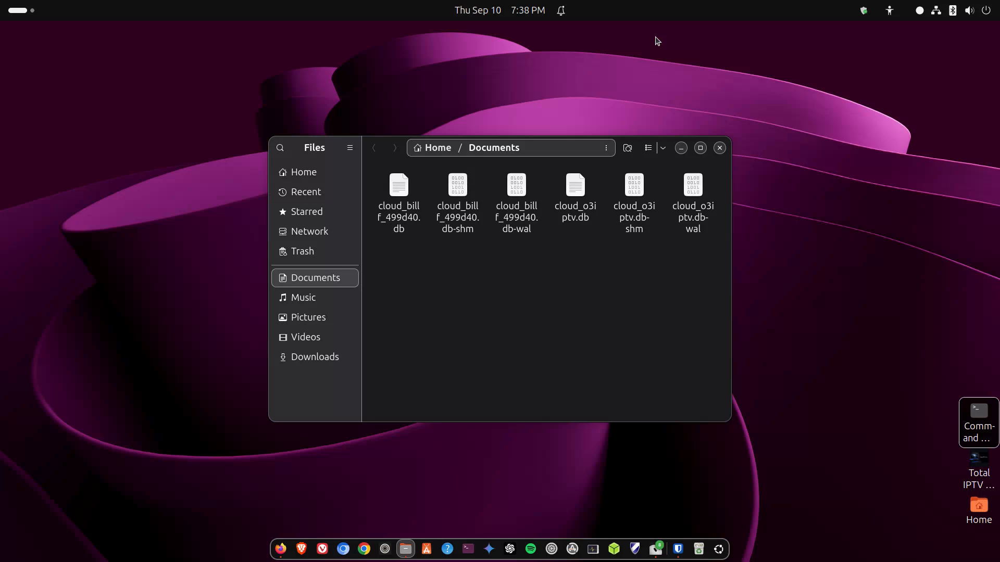

Backups
Timeshift for system snapshots and a simple “copy important files” habit.

media/images/11-backups.png with a GTR capture when ready.
Steps
- Decide what matters: Documents, Photos, browser bookmarks export, project folders.
- Simple file backup: plug in a USB drive or use a cloud folder; copy Home folders you care about. Schedule a calendar reminder monthly.
- Timeshift (popular on Ubuntu): install from App Center or apt, then create rsync/snapshot backups before big upgrades. Restore if an update goes wrong.
- Test a restore once — a backup you never tested is a wish, not a plan.
sudo apt install timeshiftAfter install, search Activities for Timeshift. Prefer snapshots on a separate disk when possible.
Note Timeshift is for system restore points; it is not a full replacement for copying your personal photos off the machine.